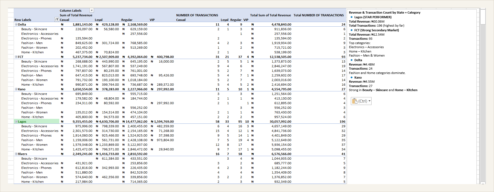
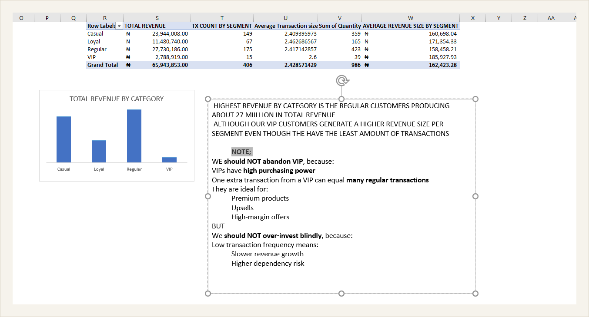
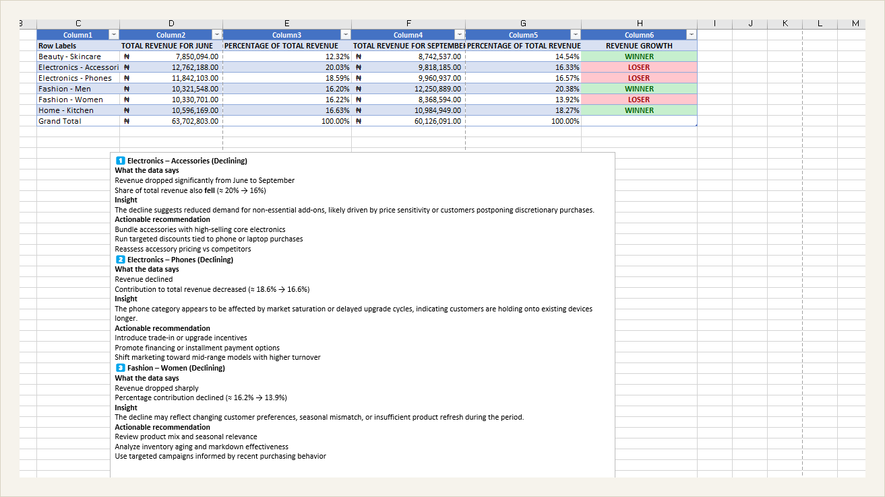
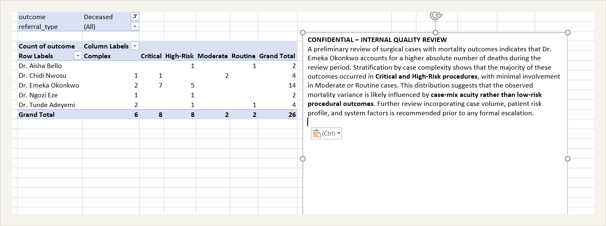
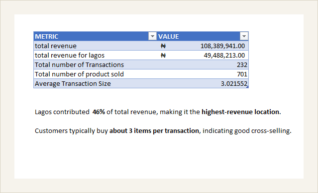

About
I work independently at the intersection of data and financial markets, building the tools to collect, clean, and interpret market data, then using that same rigor for structured analysis. Excel and SQL are where I turn raw data into something a team can act on; Python is where I automate the collection and testing behind it.
Skills
Case Studies
Swipe to browse · 11 projects
Excel · Pivot Tables
Answering Any Investor Question, On the Spot
The Ask
Leadership needed to walk into an investor meeting ready for granular questions, not "how's Lagos doing" but "how are VIP customers in Lagos buying Electronics." Any combination of state, category, or segment had to be answerable instantly.
Result
Lagos emerged as the clear star performer, ₦30.06M in revenue across 196 transactions, more than double the next-highest state. FCT was a strong secondary market at ₦12.54M.

Excel · VLOOKUP
Is the VIP Program Actually Worth It?
The Ask
Marketing needed a numbers-only answer on VIP program ROI, but segment data lived in a separate customer database from the sales file.
Result
Regular customers drove the most total revenue (₦27.7M), but VIPs had the highest average transaction size (₦185,927) despite the fewest transactions, each VIP interaction carries outsized value.

Excel · Comparative Analysis
Finding the Story Behind a Quarter
The Ask
The board wanted a Q3 review comparing September to June, not just totals, but which categories grew or declined, in percentages.
Result
Fashion – Men and Home – Kitchen gained share; Electronics – Accessories and Fashion – Women declined most. Each finding paired with a plain-language insight and recommendation.

Excel · Stratified Analysis
Documenting an Outcome Before Escalation
The Ask
A department head needed to document a possible outlier before referring it to a review committee, full data and context, not assumptions.
Result
The case load was heavily concentrated in the highest-complexity categories, showing the outcome variance was driven by case-mix acuity rather than performance. Delivered as a concise memo.

Excel · Rapid Analysis
A Clear Answer in Under 15 Minutes
The Ask
A regional director suspected Lagos revenue looked "off." The manager needed an answer before a call ended, from a messy file, in about 13 minutes.
Result
Lagos contributed ₦49.49M, 46% of total revenue, the highest of any location. Lagos wasn't underperforming, it was the strongest region.

SQL · Aggregation
Per-Loan Profitability for the Credit Team
The Ask
The credit team needed a line-by-line view of every loan showing actual profit or loss, not just aggregate totals.
SELECT loan_id, principal_amount, fee_amount, (total_amount-principal_amount) AS Total_interest_earned, (fee_amount+(total_amount-principal_amount)) AS Total_Rev_from_loan, ROUND(((fee_amount+(total_amount-principal_amount))/num_installments),1) AS profit_per_installments FROM bnpl_loans WHERE num_installments > 0
Result
A per-loan profitability view across the entire book in one query, letting the team instantly flag underperforming loans.
SQL · GROUP BY / HAVING
Spotting Thriving vs. Struggling Regions
The Ask
The Head of Expansion needed a regional health check, limited to regions large enough to matter, weakest surfaced first.
SELECT region_id, COUNT(*) AS Total_number_of_customers, AVG(lifetime_value) AS avg_lifetime_value, MAX(lifetime_value) AS max_lifetime_value, MIN(total_orders) AS min_total_orders FROM CUSTOMERS GROUP BY region_id HAVING COUNT(*) > 50 ORDER BY AVG(lifetime_value) ASC
Result
Surfaced the weakest-performing regions at a glance, so leadership could prioritize which markets needed intervention first.
SQL · GROUP BY / HAVING
Flagging Support Agents Who Need Coaching
The Ask
The Head of Customer Experience wanted agents with real ticket volume whose average resolution time was too slow.
SELECT COUNT(*) AS TICKET_COUNT, assigned_to, AVG(resolution_hours) AS AVG_resolution_hours FROM support_tickets WHERE ticket_status = 'Resolved' GROUP BY assigned_to HAVING COUNT (*) > 20 AND AVG(resolution_hours) > 48 ORDER BY avg_resolution_hours DESC
Result
A targeted coaching list instead of a general performance dump that would have buried the agents who actually needed attention.
SQL · GROUP BY
Where Customers Are Concentrated, by State
The Ask
The expansion team needed to know where customers were concentrated geographically and how valuable they were, to guide marketing budget.
SELECT COUNT(*) AS concentrated_customers, state, AVG (lifetime_value) AS avg_lifetimevalue FROM customers GROUP BY state ORDER BY COUNT(*) desc
Result
A ranked view of states by customer volume alongside average customer value in a single query.
SQL · CASE WHEN
Weekday vs. Weekend Revenue, on Short Notice
The Ask
An 11pm Sunday message from the CEO, wanting average revenue per order for weekdays vs weekends, delivered orders only, requirements shifting mid-message.
SELECT
CASE
WHEN EXTRACT(DOW FROM order_date) IN (0, 6) THEN 'Weekend'
ELSE 'Weekday'
END AS day_type,
COUNT(*) AS order_count,
AVG(total_amount) AS avg_order_value
FROM orders
WHERE order_status = 'Delivered'
GROUP BY day_type;
Result
A same-night, two-row comparison settling the claim with data instead of anecdote.
Technical · Python
CryptoBot
Algorithmic trading engine for MEXC USDT-M perpetual futures. Rebuilt the signal logic across several versions to add supply and demand zone detection, walk-forward backtesting, and regime-switching. Diagnosed a critical logic bug by comparing live paper-trading results against backtest output.
Technical · Backend
ProofWork
Backend for a verified-human micro-task platform on the Pi Network. Built the worker consensus loop and deployment pipeline from scratch, shipping through Render via a GitHub-integrated workflow.
← swipe or drag →
Education
B.Sc. Physiology, First Class Honours
Lead City University, 2025